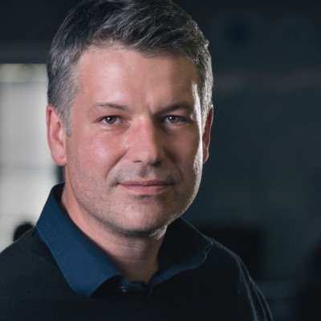
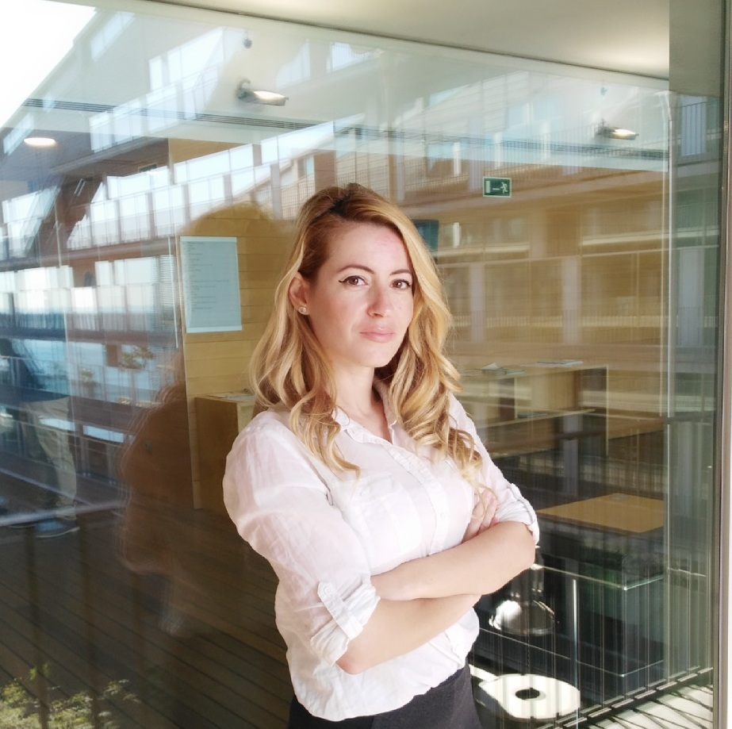
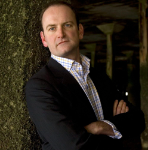
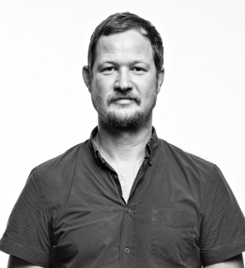
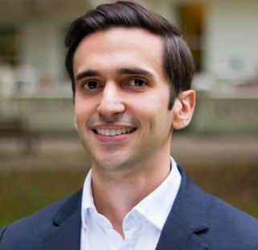
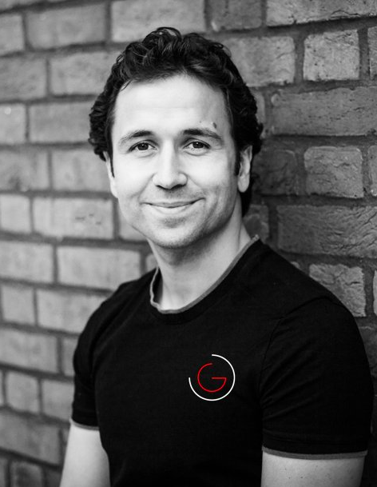

Source Summit
Source SummitScitech in high-growth South American markets
Leaders of Innovation Fellowship Year 4 is designed to enable participants to develop business connections and expand their network through a series of training sessions. The aim is to help those at the front of cutting edge technology and innovation to develop their entrepreneurial ability and commercialise their research.
This year’s cohort is attending the programme in the UK from Colombia, Brazil and Chile for a focused, in-depth training in innovation and entrepreneurship. The two days of the unconference will be 19th and 25th of October.
The programme further includes a number of networking and social events, including concluding the day on the 19th with social Drinks at the Tobacco Dock bar from 6pm. In addition, Leaders of Innovation will be hosting a dinner talk with John Spindler of the London co-investment fund about startup ecosystem development and the second day on the 19th will also conclude with drinks and then a diner talk by Galahad Clark founder of Vivobarefoot. If you’d like to participate in just those please contact niki@source.institute
About the speakers:
Mahoney Turnbull
Early-stage growth, Crowdcube
Mahoney believes that startup ecosystems thrive and grow through connectivity and cross-pollination is essential to survival and growth. Mahoney is actively involved in mentoring the next generation of startup leaders through WeWorkLabs, Google Launchpad, and StartupBus, where she is a global board member. Mahoney is interested in blockchain, sustainability, and wellness.
Jaka Levstek
CEO, DLabs

Entrepreneur, Consultant and Mentor to a wide variety of tech and digital initiatives across the globe. Frequent guest speaker in business schools. Topics of expertise include digital marketing management, branding in early-stage companies, go-to-market strategies and entrepreneurial business.
Dr. Maria Chatzou
Co-Founder and CEO, Lifebit

Dr. Maria Chatzou holds a PhD in Biomedicine, MSc in Bioinformatics and BSc in Computer Science and Biomedical Informatics. She is a biotech innovator and expert in bioinformatics, medical informatics and high performance computing (HPC). She is also a passionate entrepreneur, who has already founded two companies: Innovation Forum Barcelona and the Techstars-backed Lifebit.
Mathieu Proust
Managing Director, UberEATS
Mathieu is leading the expansion efforts of UberEats in the UK. After successfully launching in London, UberEATS currently operates in 15 cities, planning to cover 40 cities by the end of the year.
Prior to working on UberEATS, Mathieu led rides activities for Uber in East England.
Douglas Carswel
Consultant (Former member of the British Parliament)

Douglas Carswell has a portfolio of advisory and consulting roles, having recently stepped down from a successful Parliamentary career as the Member of Parliament for Clacton. His most recent book ‘Rebel: How to overthrow the emerging oligarchy” received excellent review from The Economist and The Guardian. Douglas is a fellow at the John Locke Institute and is associated with the UK’s leading think-tanks - The Adam Smith Institute and The Institute of Economic Affairs.
Julian Kaljuvee
Co-founder and Managing Director, FoundersCap
Julian, a Harvard Alumnus, is a Fintech and crypto currency consultant with over 15 years of experience in leading global institutions such as Goldman Sachs, JPMorgan, and UBS. At present, Julian is the co-founder and managing partner of FoundersCap - an early-stage VC firm.
John Spindler
CEO, Capital Enterprise
Capital Enterprise is the umbrella group for Universities, Incubators, Accelerators, Enterprise Agencies and NGOs who support entrepreneurs in London. John is on a self-described mission to make it possible for someone moderately intelligent, with a good idea, ambition and passion to make it as an entrepreneur in London.
John Davies
CEO, Strategy 4 Technology
John’s extensive experience in both the private and government sectors is what makes him uniquely qualified to help tech startups develop their business in the UK and abroad. His skillset ranges from sourcing technology and finding global partners to providing due diligence in the areas of M&A, as well as providing advice on funding rounds and investor mapping.
Galahad Clark
Founder & MD of Vivo Barefoot

Despite being a member of the Clark shoe-making dynasty, Galahad Clark spends his days telling people not to wear shoes. His brand of barefoot shoes - Vivo Barefoot - is creating footwear that shrink and expand. In result, barefoot customers are spared deformed toes and enjoy improved balance when walking.
In 2003, Galahd took over Terra Plans and set about transforming the brand by introducing new concepts. Every product was designed with a sustainable concept in mind, and eco-friendly materials were actively sourced from all corners of the world. Today, VIVOBAREFOOT aims to be the most influential company in the world and to make barefoot the gold standard in healthy, functional footwear.
Alex Garcia
Technology Licensing Executive, Imperial Innovations

Alex’s area of expertise is in commercialising software innovations; including projects in artificial intelligence, cyber-security, IoT, simulations in data science. Previously, Alex worked in market analysis and business intelligence for a wide variety of innovations in engineering.
Joseph Wallis
COO Booxscale
Jozef has 16 years digital experience in the European web and media industries, both in fixed and mobile communications. He is a serial Entrepreneur with 3 successful exits. Joseph is a UK and European market entry specialist, having built teams and established market presence for two leading US brands. Joseph is a recognized company builder and business leader, as well as an award-winning mentor and startup advisor.
Jason Grant
CEO, Integral

Jason coaches people to reframe their thinking into holistic success and create a life of sustainable growth. He achieves great results through integral and design coaching and training. More, Jason is a multi award-winning UX Designer, with over 10 years experience as an entrepreneur. In the past, Jason has worked with Disney, American Express, eBay, Lloyds Banking Group, MTV, Nando’s, Microsoft and various startups.
Schedule
9:00 - Opening and session planning
10:30 - 30-minute sessions
12:30 - Lunch
13:30 - Additional session planning
14:15 - Sessions continue
17:00 - Joint closing session
17:30 - Open Social Night at Tobacco Dock
Venue
Tobacco Dock
Spaces and a community for the #IdeasGeneration. A place where people congregate and ideas are exchanged.
Location and more info